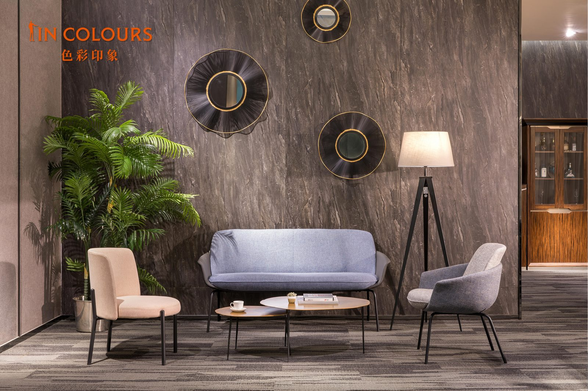

SEO Article
来佛山看办公家具，为什么要看工厂和实景展厅？
展厅让客户看空间效果，工厂让客户判断生产和交付能力，两者缺一不可。
只看图片，很难判断办公家具最终落地效果
很多客户采购办公家具时，担心图片和实际落地效果不一致。实景展厅可以帮助客户直观看到空间氛围、材质细节和整体搭配；工厂则能帮助客户判断生产能力、品质控制和项目交付稳定性。
虹桥办公家具拥有40万㎡现代化生产基地、2万㎡现有实景展厅，并有4万㎡新展厅正在装修升级中，适合企业老板、工程采购、设计公司、经销商和海外客户到厂看样。
